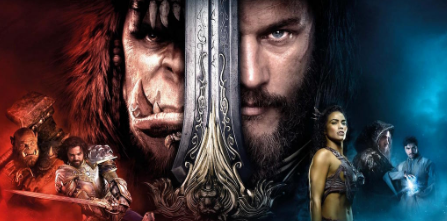

Warcraft dos games para as telas
Os Warcraft é uma série de jogos eletrônicos e franquia de mídia de fantasia criada pela Blizzard Entertainment. A série consiste em seis jogos principais: Warcraft: Orcs & Humans (1994), Warcraft II: Tides of Darkness (1995), Warcraft III: Reign of Chaos (2002), World of Warcraft (2004), Hearthstone (2014) e Warcraft Rumble (2023). Inicialmente uma série de estratégia em tempo real (RTS), Warcraft expandiu-se para outros gêneros de jogos, começando com World of Warcraft, um influente MMORPG. A franquia também gerou romances, quadrinhos, um jogo de RPG de mesa, um jogo de cartas colecionáveis e um filme de 2016.
A franquia se passa principalmente no planeta Azeroth, bem como em planetas relacionados e dimensões metafísicas. Azeroth é habitado por diversas raças e civilizações, incluindo raças típicas de fantasia como elfos, anões, gnomos, orcs e trolls, além de raças e criaturas originais exclusivas da franquia. Sua história e mitologia giram em torno da guerra entre as raças e facções de Azeroth, tipicamente entre a Aliança, liderada pelos humanos, e a Horda, liderada pelos orcs, narrando as façanhas de heróis e vilões de ambos os lados.
Embora seja essencialmente alta fantasia, o universo de Warcraft incorpora uma diversidade de influências, incluindo ficção científica e fantasia sombria. Warcraft se destaca por se diferenciar de outros universos de fantasia ao dar destaque a "raças monstruosas" como orcs, trolls e mortos-vivos, frequentemente retratando-os como protagonistas e conferindo-lhes significativo desenvolvimento de personagem e complexidade moral.
A historia
Ninguém sabe exatamente como o universo começou. Alguns teorizam que uma explosão cósmica catastrófica espalhou as jóias do infinito nos mundos na imensidão da Grande Escuridão – mundos que um dia teriam formas de vida maravilhosas e fofas. Outros acreditam que o universo foi criado por uma única entidade todo-poderosa. Embora as origens exatas do universo caótico permaneçam incertas, está claro que uma raça de seres poderosos surgiu para trazer estabilidade a esses vários mundos e assegurar um futuro seguro para os seres que seguissem seus passos.
Comandado pela elite conhecida como o Panteão, os titãs trouxeram ordem a cem milhões de mundos espalhados ao longo da Grande Escuridão do Além durante os primeiros anos de criação. O benevolente Panteão que buscava proteger estes mundos estruturados, sempre estava vigilante contra a ameaça de ataque das entidades extra-dimensionais vis da Espiral Etérea. O Caos Inferior, uma dimensão etérea de magias caóticas que conectada a inúmeros mundos do universo, era lar de um número infinito de seres malignos que só buscavam destruir a vida e devorar as energias vivas do universo. Incapazes de conceber o mal em qualquer forma, os titãs tentaram achar um modo de terminar com a constante ameaça
Sinopse
O mundo dos orcs está à beira da destruição. Liderados pelo mago Gul'dan, eles entram num portal que os leva a Azeroth, onde se envolvem num conflito com os humanos locais pelo território de Ventobravo.
Filme
O filme foi anunciado pela primeira vez em 2006 com a parceria do projeto com a Legendary Pictures. Ele retrata a origem dos encontros iniciais entre os humanos e os orcs, com ênfase em ambos os lados do conflito e terá lugar em uma variedade de locais em Azeroth, o mundo onde se passam os jogos da série. Os efeitos visuais foram produzidos pela Industrial Light & Magic.
Warcraft: O Primeiro Encontro de Dois Mundos (em inglês: Warcraft) é um filme sino-canado-norte-americano de 2016, dos gêneros ação, fantasia e aventura (cinema), dirigido por Duncan Jones para a Universal Pictures, com roteiro baseado na série de jogos eletrônicos Warcraft, da Blizzard Entertainment.
Estrelado por Ben Foster, Travis Fimmel, Paula Patton, Dominic Cooper, Toby Kebbell, Rob Kazinsky, Daniel Wu, Clancy Brown, Ben Schnetzer, Ruth Negga, Burkely Duffield, Daniel Cudmore e Callum Keith Rennie.
